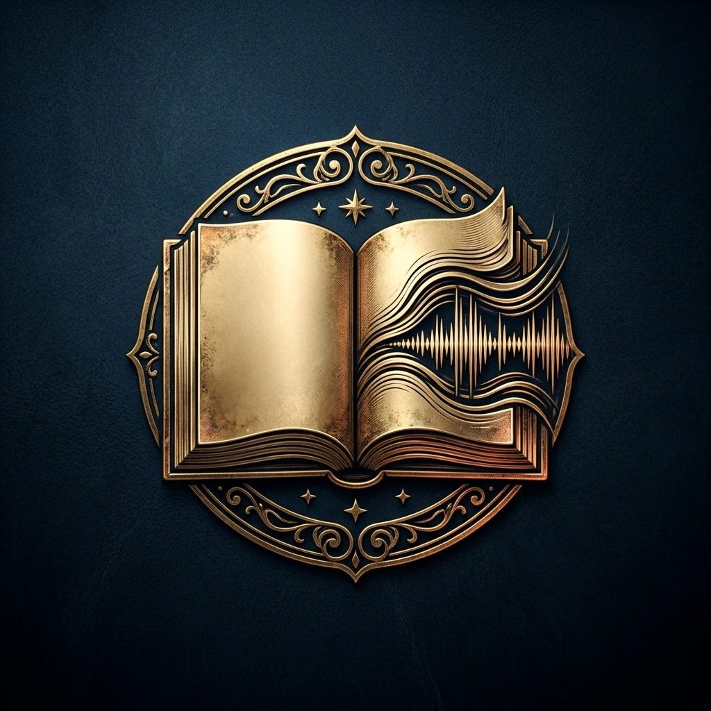

Ex libris
Satır Arası
Okudukça değişen müzik. Hangi paragrafın üstündeysen müzik onun havasına geçer; sahne değişmedikçe parça da değişmez.
- IKitaplığını kur: kendi .txt ve .epub dosyaların ya da önerilen klasikler.
- IISahneleri üç yoldan biriyle tanımlat: Gemini anahtarı, Claude hesabı (anahtar gerekmez) ya da anahtarsız, tarayıcında yerel çözümleme.
- IIIOku. Müzik seni izler, sen müziği izlemezsin.
Bu tarayıcıdaki profiller
Yerel çözümleme
Kısayollar: M müzik, F odak modu, V sesli okuma.
Konuşma dilim (sesli okuma)
Kitap dili (bu kitap; sayfa takibi, sesli kitap, sözlük)
Sesli okuma: mikrofon düğmesine bas ve yüksek sesle oku; sayfa seni izler, müzik sahneye ve sesinin temposuna göre değişir. “Müziği değiştir”, “müziği durdur”, “müziği başlat”, “sesi aç”, “sesi kıs” komutlarını anlar. Chrome ve Edge’de (localhost ya da https) çalışır; tarayıcı sesi tanımak için Google sunucularına gönderir.